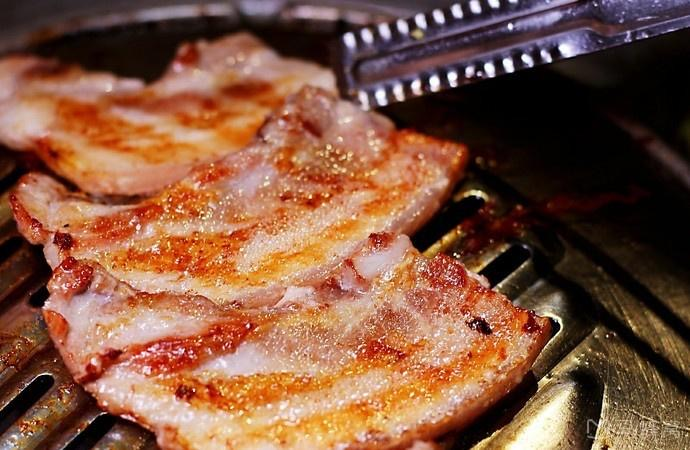

Required materials：
300 grams of beef B (2 tablespoons Korean soy sauce, 1 tablespoon chopped green onion, 2 tablespoons minced garlic, 1 teaspoon sesame oil, 1 tablespoon sesame), Vegetables (lettuce, sesame leaves, green peppers, chikry, etc.) are appropriate. 1 small plate of duck intestines, 5 large skewers of pork ribs, 6 skewers of chicken skin, half a green onion C (half a teaspoon of chili powder, half a teaspoon of sesame oil, one-fifth spoon of salt), 3 garlic

Required seasoning：
2 tablespoons of soybean paste, 1/2 tablespoon of chili sauce, 1/2 teaspoon of garlic, chili bag, 1/2 teaspoon of sugar, 1 teaspoon of sesame oil, 1 teaspoon of sesame noodles, stir these and serve.
Production process
1.Clean the drumsticks, make a few strokes on the surface after drying, and make the stroke as deep as possible, so that it is delicious.
2.Salt, five-spice powder, cooking wine, milk, stir well and marinate for 30 minutes
3.Mix the eggs and flour into a paste and evenly wrap them on the chicken legs
4.Fry the chicken drumsticks in the pan for about 5 minutes, remove them, and fry again
5.Add the sauce and water. After the sauce is boiled, add the chicken thighs, wrap evenly, and collect the sauce over high heat